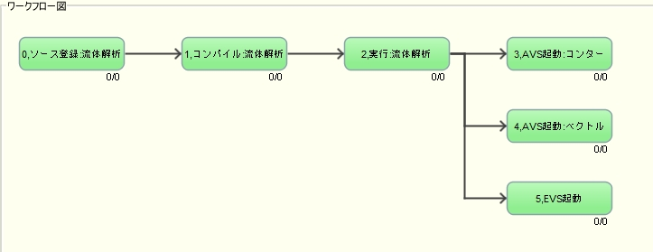

エンジニアリングデータ管理システム 『 ASNARO 』
エンジニアリングデータ管理システム『ASNARO』 - 目次
- 概要
- 『ASNARO』について
- 主な機能
主な機能
◆自動実行を可能としたワークフロー機能
ソルバやプリポストを自動で実行し、データ回収をするワークフロー機能があります。これにより、インプットファイルの作成からソルバの起動、解析実行からパラメータスタディなどをASNAROが代行します。

＜クリックで拡大画像＞
＜クリックで拡大画像＞
◆パラメータスタディ自動実行機能
シミュレーションなどのパラメータスタディをASNAROから実行することができます。算出されたデータは自動的に回収され、データベースにパラメータや生成データの登録が同時に行われます。
◆算出データ、ファイル類を自動的にデータベース化
ワークフローを実行するだけで、生成されたデータの回収から登録まで自動的に行い、データベース化されます。データベース化されたものはテーブルビューワで一覧として確認することができ、表示内容もサムネイル表示や算出ファイル表示など、プルダウンメニューで切り替えることもできます。◆リモートサーバーへのジョブ投入機能
ASNAROはリモートサーバー環境で利用することができます。LSF、PBSなどのNQSへのジョブ投入機構を持っており、スーパーコンピュータやPCクラスタへのジョブ投入もASNAROから実行できます。また生成されたデータの格納先を指定することも可能です。
◆パラメータの変数化・GUI化機能
ASNAROではCAEアプリケーションや分析・実験装置のインプットファイルのパラメータ部分を抽出し、変数として定義することができます。定義をルール化をすることによって、ASNAROのGUIからパラメータを直接変更することが可能となります。◆リモートデスクトップ連携機能
ワークフロー実行し、自動で手元のローカルPCにリモートサーバの画面を立ち上げることができます。ローカルPCに可視化等のアプリケーションが入っていなくても、サーバ側の画面を操作することができます。反対にローカルPCのアプリケーションをワークフローに組み入れて実行させることも可能です。お手持ちの環境に合わせたアプリケーション実行が行えます。
◆権限管理機能
プロジェクトやグループ単位でのアクセス権限を設定することができます。サーバ運用のため、データの公開性・共有性に優れていることはもちろん、秘匿性も確保しております。